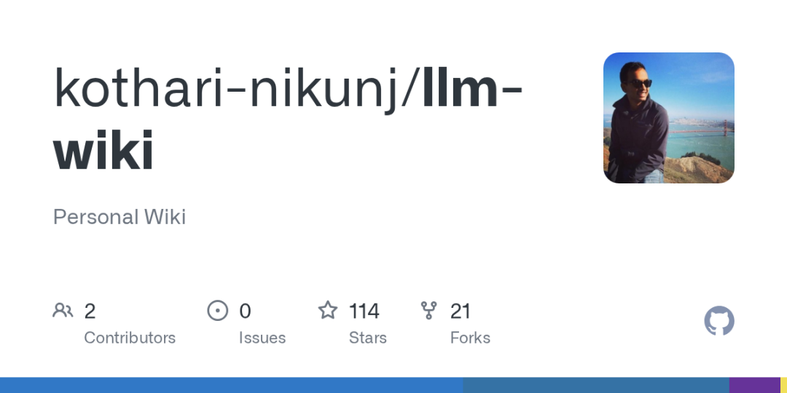
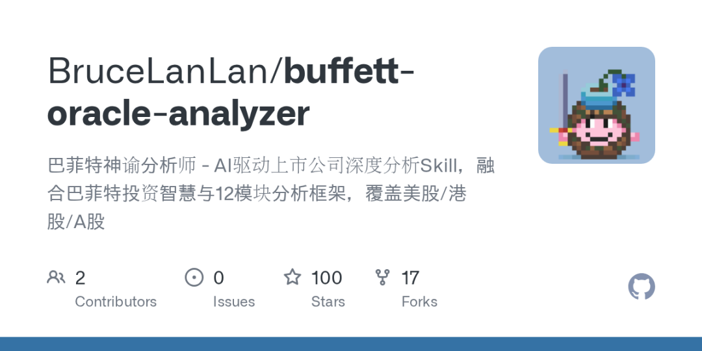
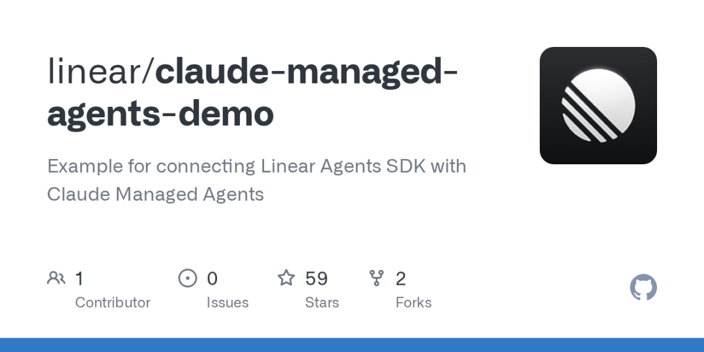
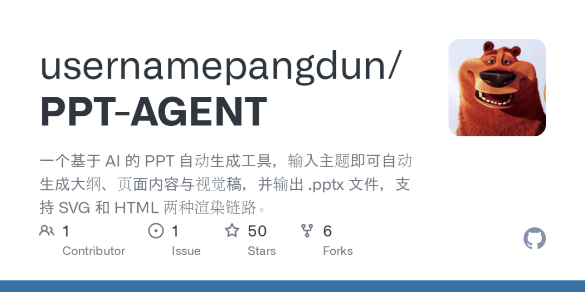
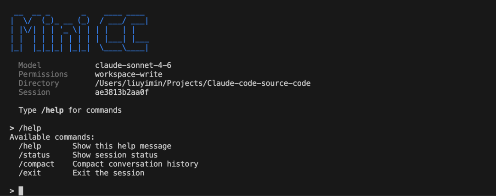

关注我，记得标星⭐️不迷路哦～
关注我，记得标星⭐️不迷路哦～
✨ 1: LLM Wiki
LLM个人知识维基

LLM Wiki是一个由AI驱动的个人知识库系统，它利用Anthropic的Claude Code大语言模型，读取用户的各类原始数据，如个人文章、推文、消息和书签等，并将其智能地编译成相互关联、按主题组织的文章，形成一个类似维基百科的个人知识图谱。该项目支持多种数据源的无缝摄取，通过可视化Web界面提供密码保护的浏览体验，用户可以通过一系列命令行工具对知识库进行吸收、查询、清理和重组等操作，以持续丰富和优化内容，并且允许用户直接对AI生成的事实错误进行纠正，秉承“文件优于应用”的理念，所有内容均以纯Markdown文件存储，并且在数据处理时会根据来源设定优先级，以分层吸收的方式构建更精确的知识库。
地址：https://github.com/kothari-nikunj/llm-wiki
✨ 2: 巴菲特神谕分析师
AI巴菲特深度投资分析

“巴菲特神谕分析师”是一个AI驱动的Claude AI Skill，旨在对美股、港股和A股上市公司进行机构级的深度投资分析。该项目将巴菲特的投资智慧与现代12个分析模块框架相结合，用户只需提供股票代码或公司名称，即可获得一份全面的投资分析报告。其核心功能包括基于巴菲特理念的护城河五维度评分、所有者盈余计算、八种估值模型交叉验证、电话会议深度解读、完整的技术面分析（如均线、RSI、MACD、布林带、斐波那契等），并提供巴菲特计分卡式的评估以及包含目标价、买入区间、止盈止损和仓位建议的可执行投资决策。项目具备适应多市场数据源和会计准则的能力，并遵循六步分析工作流，确保分析的系统性和严谨性。
地址：https://github.com/BruceLanLan/buffett-oracle-analyzer
✨ 3: Claude + Linear Agent Bridge
Claude Linear 代理桥接

Claude + Linear Agent Bridge 项目是一个桥接服务器，旨在连接Anthropic的Claude托管代理与Linear的问题管理平台。其核心功能是实现用户在Linear中通过@提及或分配代理来触发AI互动，服务器随即接收Linear的AgentSessionEvent webhook，并基于问题上下文创建一个Claude托管代理会话，然后将Claude代理的实时流式响应作为活动更新反馈回Linear。该项目展示了如何将AI代理能力无缝集成到项目管理工具中，实现智能化的工作流响应，尽管它主要作为非生产用途的示例而设计。
地址：https://github.com/linear/claude-managed-agents-demo
✨ 4: PPT-AGENT
LLM智能PPT生成与优化

PPT-AGENT是一个基于大型语言模型（LLM）的自动化PPT生成工具，旨在提高演示文稿制作效率。它提供两种输出链：SVG Pipeline通过AI生成SVG页面再转换为PPT，以及更推荐的HTML Pipeline，后者通过AI生成单页HTML并截图导出为PPTX文件，显著改善了页面布局稳定性和文本溢出问题。核心功能包括自动生成PPT大纲、扩写每页内容、创建单页视觉草稿，并最终输出.pptx文件，支持OpenAI兼容接口。特别是HTML Pipeline内置了先进的页面自检与智能布局修复机制，例如紧凑模式、总结安全模式、时间线安全模式和密集卡片安全模式，同时可根据目标受众动态调整演示文稿的视觉风格，并支持可选的AI审查功能，以确保内容的专业性和版式质量。
地址：https://github.com/usernamepangdun/PPT-AGENT
✨ 5: MiniCC
手写迷你Claude Code：构建AI Agent教程

MiniCC项目旨在帮助开发者从源代码层面深入理解并亲手构建一个属于自己的AI Code Agent，其核心在于解构Anthropic Claude Code的“harness engineering”设计。该项目通过提供19个循序渐进的Python教学演示，系统性地讲解了Agentic Loop、工具系统、权限管理、会话与消息模型等关键概念，并进一步提供了一个用Python手写的Mini Claude Code实现。这个Mini版本由13个模块组成，忠实还原了原版Claude Code的工程模式，并通过详细的开发指南，引导学习者一步步从零开始实现这些模块，最终拥有一个可运行的AI Agent。项目强调通过代码而非冗长理论来传授知识，鼓励实践，并提供了原版Rust代码和分析笔记供深入对照，旨在让学习者不仅理解设计理念，更能通过实践掌握构建复杂AI Code Agent的核心技术与工程模式。
地址：https://github.com/Louisym/MiniCC
这就是本期的内容，记得标星⭐️点赞 ，关注我不迷路哦～
，关注我不迷路哦～